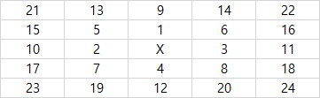

public class TreasureHunt
{
int xLen,yLen;
char[][] land;
String[] inst;
boolean instCheck(int x, int y) {
int[] dx = {0,-1,1,0};
int[] dy = {-1,0,0,1};
for (int k = inst.length-1; k >= 0; k--) {
char d = inst[k].charAt(0);
int p = inst[k].charAt(2)-'0';
if (d == 'W') {
while(p-->0)
if(++x>=xLen || land[y][x]!='O') return false;
}
else if (d == 'E') {
while(p-->0)
if(--x<0 || land[y][x]!='O') return false;
}
else if (d == 'N') {
while(p-->0)
if(++y>=yLen || land[y][x]!='O') return false;
}
else {
while(p-->0)
if(--y<0 || land[y][x]!='O') return false;
}
}
for (int i=0; i < 4; i++) {
int x1 = x+dx[i];
int y1 = y+dy[i];
if(x1<0 || y1<0 || x1>=xLen || y1>=yLen || land[y1][x1] == '.') return true;
}
return false;
}
public int[] findTreasure(String[] island, String[] instructions) {
land = new char[island.length][];
for (int i=0; i < land.length; i++)
land[i] = island[i].toCharArray();
inst = instructions;
int[] mx = new int[]{0,-1,1,0,-1,1,-1,1};
int[] my = new int[]{-1,0,0,1,-1,-1,1,1};
xLen = land[0].length;
yLen = land.length;
int iLen = (xLen > yLen) ? xLen : yLen;
int cx=0, cy=0;
LOOP:
for (int i=0; i < land.length; i++) {
for (int j=0; j < land[0].length; j++) {
if (land[i][j] == 'X') {
cx = j;
cy = i;
land[i][j] = 'O';
break LOOP;
}
}
}
if(instCheck(cx,cy)) return new int[]{cx,cy};
for (int i=1; i <= iLen; i++) {
for (int j=0; j < 4; j++) {
int x = cx + mx[j];
int y = cy + my[j];
if(mx[j] > 0) mx[j]++;
else if(mx[j] < 0) mx[j]--;
if(my[j] > 0) my[j]++;
else if(my[j] < 0) my[j]--;
if(x<0 || y<0 || x>=xLen || y>=yLen || land[y][x]=='.') continue;
if(instCheck(x,y)) {return new int[]{x,y};}
}
for (int j=1; j < i; j++) {
// top
int x = cx-j;
int y = cy-i;
if(x>=0 && y>=0 && land[y][x]!='.' && instCheck(x,y)) return new int[]{x,y};
x = cx+j;
if(y>=0 && x<xLen && land[y][x]!='.' && instCheck(x,y)) return new int[]{x,y};
// both sides of the center
x = cx-i;
y = cy-j;
if(x>=0 && y>=0 && land[y][x]!='.' && instCheck(x,y)) return new int[]{x,y};
x = cx+i;
if(y>=0 && x<xLen && land[y][x]!='.' && instCheck(x,y)) return new int[]{x,y};
x = cx-i;
y = cy+j;
if(x>=0 && y<yLen && land[y][x]!='.' && instCheck(x,y)) return new int[]{x,y};
x = cx+i;
if(x<xLen && y<yLen && land[y][x]!='.' && instCheck(x,y)) return new int[]{x,y};
// bottom
x = cx-j;
y = cy+i;
if(x>=0 && y<yLen && land[y][x]!='.' && instCheck(x,y)) return new int[]{x,y};
x = cx+j;
if(x<xLen && y<yLen && land[y][x]!='.' && instCheck(x,y)) return new int[]{x,y};
}
for (int j=4; j < 8; j++) {
int x = cx + mx[j];
int y = cy + my[j];
if(mx[j] > 0) mx[j]++;
else if(mx[j] < 0) mx[j]--;
if(my[j] > 0) my[j]++;
else if(my[j] < 0) my[j]--;
if(x<0 || y<0 || x>=xLen || y>=yLen || land[y][x]=='.') continue;
if(instCheck(x,y)) {return new int[]{x,y};}
}
}
return new int[]{};
}
}
Explanation

X를 기준으로 +(상좌우하) / [상좌우하]와 [좌상,우상,좌하,우하]를 제외한 현재 이동 횟수에 있는 칸들의 최상단부터 최하단 / X(좌상,우상,좌하,우하) 순으로 탐색해 나간다. 유클리디안 거리를 기준으로 순서를 정해놨기 때문에 유클리디안 거리를 계산하여 비교할 필요없이 원하는 결과를 찾으면 바로 x,y 좌표를 반환한다.